Quality is an important factor when it comes to products or services. Nowadays, quality has become the differentiating factor for all goods and services. It is vital for businesses to deliver products that meet or exceed expectations. It also helps minimize waste.
That is why most manufacturers would not think of eliminating the quality control from their manufacturing process. After all, removing quality controls would dramatically increase the number of defective products that the company then has to rework or scrap.
Then, using business applications to ensure data quality is important. With Ibel insuring the rear, any major problem can be avoided before occurring!
Quality Control Points
To create a Quality Control Point, go to . Once there, define the product on which the quality control point should take place. The operation at which it takes place also is to be defined here.
The Quality Control Points take place during transfers or during the manufacturing process of the products. If working with routings on Bill of Materials, you have to precise at which step of the manufacturing process the quality control point needs to be applied.
The Control Type defines at which frequency the quality checks should take place:
- All operations: all the operations automatically generate quality checks to perform;
- Randomly: the quality checks only perform on x% of the operation. The percentage needs to be defined on the control point;
- Periodically: the quality checks are performed periodically. The periodicity is based on the defined period (once a day, once a week).
Quality Control Point Types
Now, one thing remains to be configured: the type of quality check. There are several types that can be used: text, take a picture, pass-fail, take a measure, register consumed material, register by-product, and print label.
Note
Some types are available only with the manufacturing application installed.
Text
This control point type allows giving instructions to workers during the transfer or during the manufacturing process.
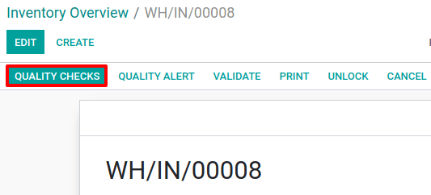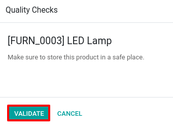Take a Picture
This control point type asks to take a picture of the product applied in a transfer or when manufacturing it.
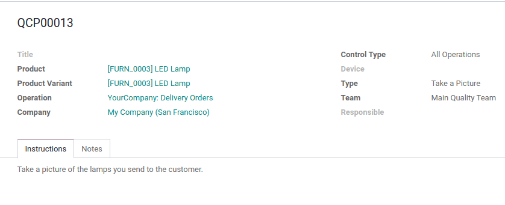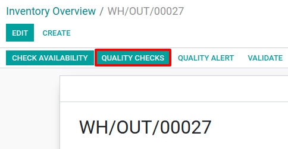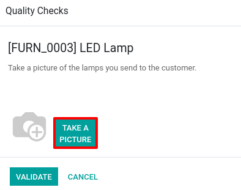Tip
This process can be simplified by using a connected camera.
Pass-Fail
Pass-Fail requires to specify if the products pass or fail specific criteria. It can be applied for both transfers or manufacturing orders.
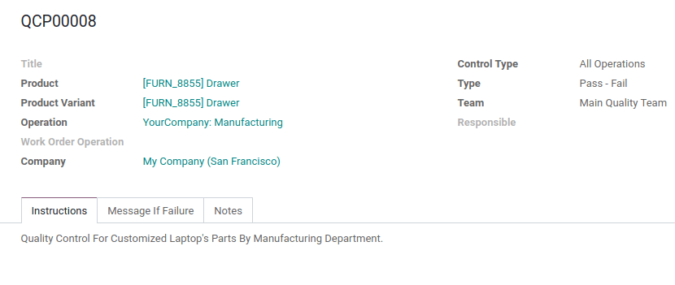For this kind of type, there is the possibility to define a failure message giving instructions to follow in case of failure.
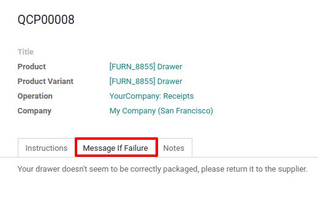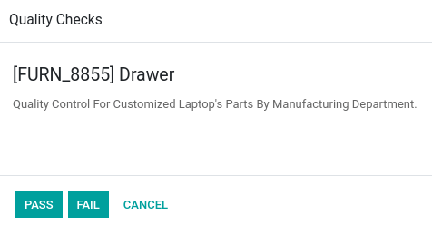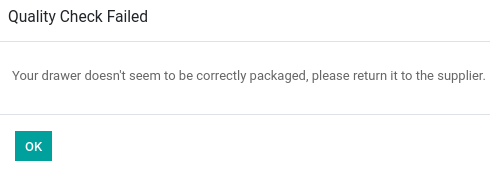Take a Measure
Taking measures requires to enter the product’s measurements during a transfer or during the manufacturing process.
To use it, it necessary to specify the norm for your product’s measurements, but also a tolerance threshold. Doing so, all the products with good measures can are automatically accepted.
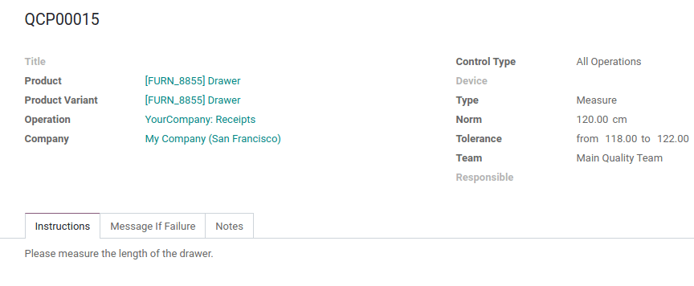As for Pass-Fail, this type allows defining a failure message that gives instructions to the worker.
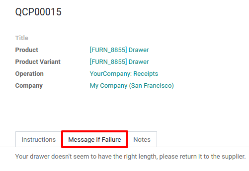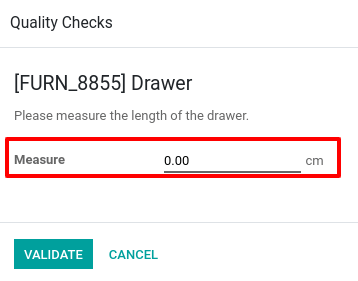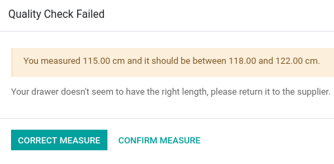Tip
This process can be simplified by using connected measurement tools.
Register Consumed Materials
When using Register Consumed Materials, it is required to register the component’s serial/lot numbers during the manufacturing process.
Note
This type is only available when working with routings.
Register By-Products
With Register By-Products, it is required to register the serial/lot number of the by-products that are manufactured.
Note
This type is only available when working with routings.
Print Label
Print Label, as its name points out, allows printing labels to add to the product during the manufacturing process.
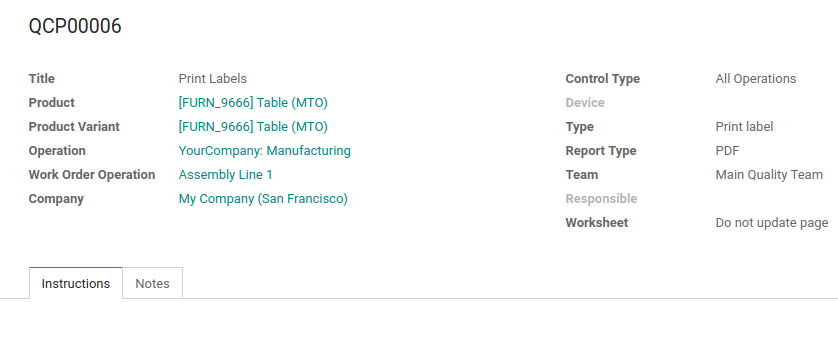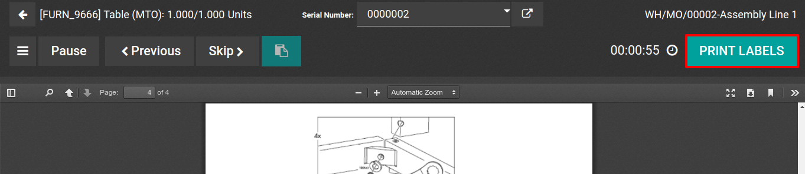Tip
This process can be simplified by using a connected printer.